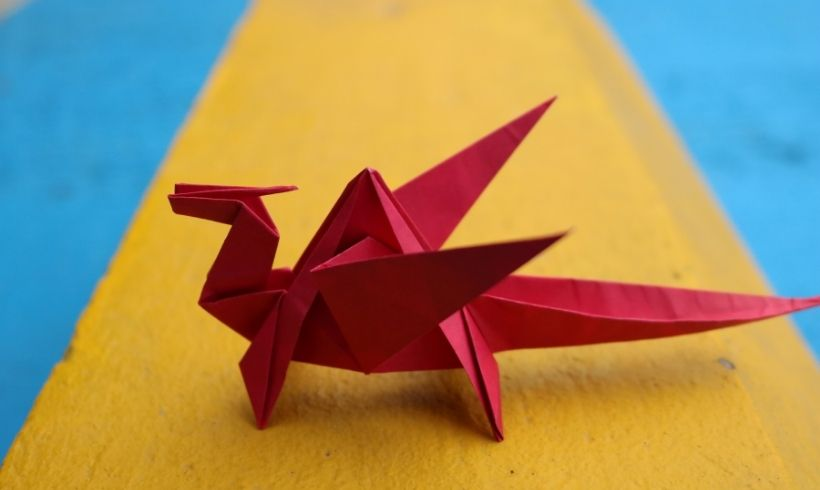

Instrucciones y diagramas de origami
Los diagramas paso a paso son probablemente la forma mas popular y facil de seguir para mostrar como doblar papel.
Sin embargo, tratar de encontrar buenas instrucciones de origami en Internet puede ser mucho trabajo. Para ayudar en tu busqueda,
hemos reunido la mayor base de datos de diagrams de origami gratuitos en internet.

Camaleon
- Los camaleones son reptiles que forman parte de la familia de la iguana
- Cambian el color de la piel es una parte importante de la comunicación entre los camaleones

Pigeon
- Las palomas son criaturas increiblemente complejas e inteligentes
- Las palomas son reconocidas por sus excepcionales hablidades de orientación
- Las palomas tienen una excelente capacidad auditiva

Camel
- La joroba de un camello es un reservorio de grasa, al contrario de la creencia de que almacena agua
- En un sólo día un camello es capaz de beber 200 litros de agua
- Una de las características más conocidas de los camellos es su capacidad para soportar varios días sin beber agua

Teddy Bear
- Su olfato puede superar el de los perros
- Los osos comen casi cualquier cosa
- tienen una gran inteligencia

Panda
- Los osos panda son buenos trepando árboles y también pueden nadar
- Los pandas pasan de rosa a blanco y negro (o marrón)
- A pesar que el oso panda es considerado un animal carnívoro, su alimento favorito es el bambú

Flying Cicada
- Las cigarras tienen cinco ojos
- Se tapan los 'oídos' para evitar escuchar su propio canto
- Las cigarras masculinas hacen vibrar una membrana blanca llamada tymbal, muy parecida a un tambor ubicada en sus abdómenes